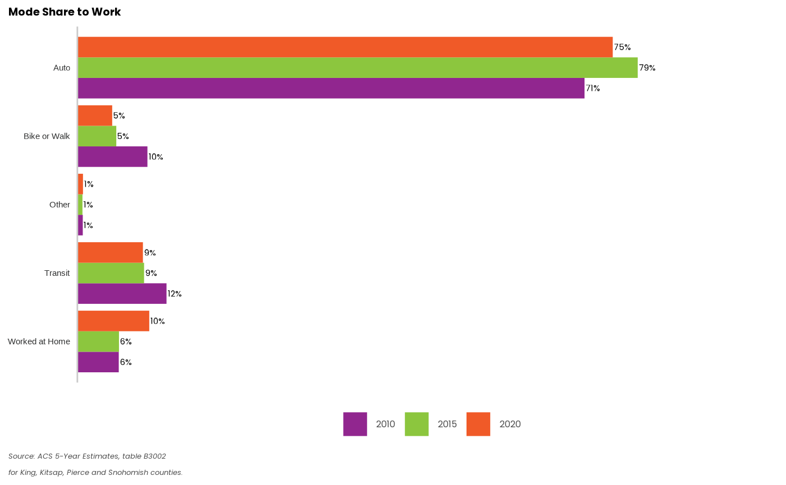

Get Started Making a Static Plot
make-plots.RmdThe function names in PSRC plot have a naming convention that first identifies whether the plot is static or interactive, then what type of chart. For example, interactive_column_chart makes an interactive chart that can be displayed on the web that has vertical bars.
Make a static bar plot of Census data
If you want to create a bar plot, you call the function static_bar_chart specifying t as the underlying table. Note that in a static_bar_chart the x variable is expected to be numeric, and the y variable is categorical- since the numeric values are represented on the x axis and the y values are the categories.
In the example below, we have read in an example data table that shows mode share by race for the region:
mode_shares <- psrcplot::mode_share_example_data %>%
filter(Category=="Mode to Work by Race") %>%
filter(Geography=="Region" & Race=="Total") %>%
mutate(Year = as.character(Year))
mode_shares## Year Geography Race count count_moe share share_moe
## 1 2010 Region Total 403369 10836.103 0.711037977 0.0138130361
## 2 2010 Region Total 55723 6004.193 0.098225618 0.0102303583
## 3 2010 Region Total 70898 5562.850 0.124975322 0.0096255011
## 4 2010 Region Total 32929 3189.047 0.058045535 0.0056401605
## 5 2010 Region Total 4314 1340.329 0.007604496 0.0023254157
## 6 2015 Region Total 1577787 15808.465 0.785575621 0.0061570136
## 7 2015 Region Total 109617 7425.106 0.054577990 0.0036083656
## 8 2015 Region Total 187841 8902.649 0.093525495 0.0043774057
## 9 2015 Region Total 117189 7840.840 0.058348067 0.0037042782
## 10 2015 Region Total 14338 2309.254 0.007138849 0.0011428535
## 11 2020 Region Total 1620547 8688.810 0.750594831 0.0027689638
## 12 2020 Region Total 105416 3288.144 0.048825924 0.0014903525
## 13 2020 Region Total 198435 4574.825 0.091909883 0.0020960216
## 14 2020 Region Total 217592 4550.691 0.100782903 0.0021255052
## 15 2020 Region Total 17027 1401.342 0.007886459 0.0006464336
## Category Mode
## 1 Mode to Work by Race Auto
## 2 Mode to Work by Race Bike or Walk
## 3 Mode to Work by Race Transit
## 4 Mode to Work by Race Worked at Home
## 5 Mode to Work by Race Other
## 6 Mode to Work by Race Auto
## 7 Mode to Work by Race Bike or Walk
## 8 Mode to Work by Race Transit
## 9 Mode to Work by Race Worked at Home
## 10 Mode to Work by Race Other
## 11 Mode to Work by Race Auto
## 12 Mode to Work by Race Bike or Walk
## 13 Mode to Work by Race Transit
## 14 Mode to Work by Race Worked at Home
## 15 Mode to Work by Race OtherThis data table is sent into a static_bar_chart with PSRC colors in the following function:
# Static Chart
modes_chart <- static_bar_chart(t=mode_shares, y="Mode",x="share", fill="Year",
title="Mode Share to Work",
alt="Chart of Work Mode Shares",
source=paste("Source: ACS 5-Year Estimates, table B3002",
"for King, Kitsap, Pierce and Snohomish counties.",
sep = "\n"),
color="pgnobgy_5")
modes_chart You can find out more about any of the functions by running ?function_name in the package. For example, ?static_bar_chart()
Exporting a static chart
You have a few options for saving a static chart. First you can right click on a plot you have open in R-Studio and save it to a file.
To export the static chart programmatically, you can use a ggplot2 function called ggsave: https://ggplot2.tidyverse.org/reference/ggsave.html
Here is how you can save the static bar chart you created above programmatically.
ggsave(filename='modes_bar_chart.png', plot=modes_chart, device='png')## Saving 7.29 x 4.51 in image